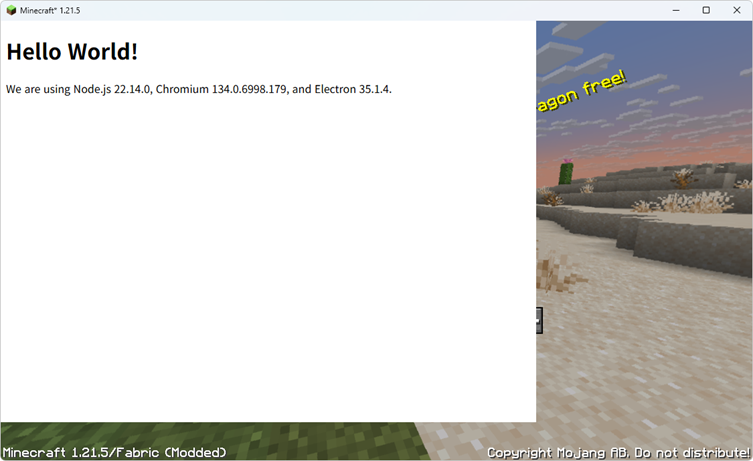

Introduction
Welcome to Asdf Overlay. Asdf Overlay provides an easy to use interface to draw on top of windows. It is primarily targeting games, but it can be used on any programs using GPU.
- Automatic graphics backend detection
- GPU accelerated shared overlay surface
- Input passthrough control

By reading the documentation you will learn how to
- Setup development environment and building the library
- Position overlay surface in multiple way
- Control input passthrough
Supported graphics backend
- OpenGL
- DX9
- DX11
- DX12
- Vulkan (via loading as vulkan layer)
License
This project is dual licensed under MIT or Apache-2.0 License.
Prerequirements
To build Asdf Overlay, you need prerequirements. Click each items below, follow the install instructions.
- Node.js
- Microsoft Visual C++ Compiler for x86, x64 and ARM64
- Rust
- Git
Workspace Setup
To setup Asdf Overlay workspace, you will first need to clone the repository.
Following command can be used to clone Github repository.
git clone https://github.com/storycraft/asdf-overlay
After cloning repository, change the current directory.
cd asdf-overlay
Initialize and update submodules by using a command below.
git submodule update --init --recursive
Finish by installing node dependencies.
pnpm install
Building project
Once you done set up workspace, you can build the project using following command.
pnpm build
For more detail, see Pnpm Command - build.
Debugging
By default, release build will not emit any logs due to performance overhead. To debug overlay DLL, you need to build with debug profile.
To build overlay DLL with debug profile, following command can be used.
pnpm build-dll
After building, replace overlay DLL. Overlay DLL with debug profile will emit tracing to Debug Output Window. Use external debug log viewer (ex: DebugView) to see debug output.
Node.js (Electron) User Guide
This section provides information on how to use Asdf Overlay with Node.js and Electron.
- Installation Instructions on how to install Asdf Overlay for Node.js and Electron.
- Attaching to target process Guide on how to attach Asdf Overlay to a target process.
- Closing the connection Instructions on how to properly close the Asdf Overlay connection in a Node.js environment.
- Obtaining window information Guide on how to obtain main window information of target application.
- Layout and Surface connection Guide on how to layout overlay surface and connect overlay surface to target window in Electron.
- Input Control Guide on how to control input events and passthrough of overlay window.
For more examples, see example projects in the examples/node directory of the repository.
Installation
Following command will install core Node.js package and Electron integration package
npm install @asdf-overlay/core @asdf-overlay/electron
Attaching to target process
To control overlay, you first need to attach overlay dll to target process.
The @asdf-overlay/core package provides a function for attaching overlay and initialize IPC connection.
Following code connects overlay to target process.
import { defaultDllDir, Overlay } from '@asdf-overlay/core';
const overlay = await Overlay.attach(
defaultDllDir().replace('app.asar', 'app.asar.unpacked'),
/* target process id */ 12345,
/* optional timeout in ms */ 5000,
);
Some caveats included below:
@asdf-overlay/corepackage includes overlay dll files for x64, ia32 and arm64 architectures. Asdf overlay will choose appropriate one based on the target process architecture. ThedefaultDllDirfunction returns path to the directory containing these dll files.- Onced injected, the dll will not be unloaded until the target process exits and maybe reused later if another connection is established.
- If optional timeout is not provided, it will wait indefinitely.
- The
Overlay.attachfunction returns anOverlayinstance upon successful attachment and can be used to control the overlay. - On Electron,
@asdf-overlay/coremust be specified as external to work correctly. - On Electron,
defaultDllDirfunction may return path insideapp.asararchive. In such cases, you need to replaceapp.asarwithapp.asar.unpackedto access the dll files.
Closing the connection
After opening a connection to Asdf Overlay, it is important to close the connection properly to free up resources.
The Overlay instance provides a method to close the connection and unload the overlay dll from the target process.
Following code demonstrates how to close the overlay connection.
import { Overlay } from '@asdf-overlay/core';
const overlay: Overlay = /* previously attached Overlay instance */;
overlay.destroy();
Some caveats included below:
- After calling the
destroymethod, the overlay setup in the target process will be reset, and the resources will be released. - You cannot use the
Overlayinstance after calling this method.
Obtaining Window Information
Before showing overlay, you need to specify which window to show overlay. In most case, you need to obtain main window information of target application.
This heuristic code can be used to obtain main window information.
const [id, luid] = await new Promise<[number, GpuLuid]>(resolve => overlay.event.once(
'added',
(id, _width, _height, luid) => {
resolve([id, luid]);
}),
);
It will return first found window ID and its associated GPU LUID.
Layout and Surface connection
This section explains how to layout overlay surface and connect overlay surface to target window in Electron.
Layout
After obtaining window id, you can set overlay layout using various options.
There are two types of specifying length: absolute length in pixels and relative length in percentage.
Relative length is specified as a number between 0.0 and 1.0, representing percentage of target window size.
Layout can be done using setPosition, setAnchor and setMargin methods of Overlay instance.
import { Overlay, percent, length } from '@asdf-overlay/core';
const overlay: Overlay = /* Attached Overlay instance */;
const id: number = /* Id of target window */;
// Set position to center of target window
await overlay.setPosition(id, percent(0.5), percent(0.5));
// Set anchor to center of overlay surface
await overlay.setAnchor(id, percent(0.5), percent(0.5));
// Set margin to 10 pixels from each side
await overlay.setMargin(id, length(10), length(10), length(10), length(10));
- Position: Specifies the position of overlay surface relative to target window's client area. The position is determined by the anchor point of overlay surface.
- Anchor: Specifies the anchor point of overlay surface. The anchor point is a point on the overlay surface that will be aligned to the position in the target window.
- Margin: Specifies the margin between overlay surface and target window's client area. Margin is specified for each side: top, right, bottom and left.
Surface connection
After obtaining main window information, you can connect overlay surface to show overlay.
By using @asdf-overlay/electron package, you can easily connect Electron window as overlay surface.
Code example is shown below.
import { Overlay } from '@asdf-overlay/core';
import { ElectronOverlaySurface, type OverlayWindow } from '@asdf-overlay/electron';
const overlay: Overlay = /* Attached Overlay instance */;
const windowId: number = /* Id of target window */;
const gpuLuid: GpuLuid = /* GPU LUID of target window */;
const window: OverlayWindow = { id: windowId, overlay };
const mainWindow = new BrowserWindow({
webPreferences: {
offscreen: {
useSharedTexture: true,
},
},
});
const surface = ElectronOverlaySurface.connect(window, gpuLuid, mainWindow.webContents);
// Disconnecting surface
await surface.disconnect();
Caveats include:
- Make sure to enable
offscreen.useSharedTextureinwebPreferenceswhen creatingBrowserWindow. Without this option, overlay will be presented using CPU which causes high latency and low performance. - You need to provide correct
GpuLuidwhen connecting surface. On hybrid GPU systems like laptops with integrated and discrete GPUs, providing wrongGpuLuidwill result in no overlay shown. - While overlay position can be changed, size is fixed to connected surface texture.
To change size of surface, change the size of browser.
ElectronOverlaySurfaceinstance takes care of resizing overlay surface automatically. - To disconnect surface, call
disconnectmethod ofElectronOverlaySurfaceinstance. This will disconnect and release surface resources.
Input Control
This section provides a guide on how to listen to input events and control input passthrough to overlay window.
Listening to input events
To listen to input events going to the overlay window, you can use listenInput method from the Overlay instance.
This method allows you to listen cursor and keyboard events using event listeners.
Example:
import { Overlay } from '@asdf-overlay/core';
const overlay: Overlay = /* Attached Overlay instance */;
const windowId: number = /* Target window ID */;
await overlay.listenInput(
windowId,
true, /* listen to cursor events */
true, /* listen to keyboard events */
);
// Register listener for cursor events
overlay.on('cursor_input', (windowId, event) => {
// Cursor event listener
});
// Register listener for keyboard events
overlay.on('keyboard_input', (windowId, event) => {
// Keyboard event listener
});
Caveats:
- Raw input will not be captured as you can register platform specific raw input listeners.
- Listening to unnecessary input events may cause performance issues.
- IME input events are provided as best-effort basis and may not work as expected in all cases.
Controlling input passthrough
Sometimes you may want to control whether input events are passed through to the underlying window or not. For example, you may want to show interactive overlay UI and you don't want input events to reach the underlying window.
By using blockInput method from the Overlay instance, you can block or unblock input events reaching the underlying window.
Example:
import { Overlay } from '@asdf-overlay/core';
const overlay: Overlay = /* Attached Overlay instance */;
const windowId: number = /* Target window ID */;
await overlay.blockInput(
windowId,
block, // true to block input, false to unblock input
);
overlay.event.on('input_blocking_ended', () => {
// Event listener called when input blocking ends
});
Caveats:
- All input events will be captured, regardless of whether you are listening to them or not.
- Raw input will be blocked.
- User can interrupt input blocking by pressing
Alt + F4shortcut. Always listen toinput_blocking_endedevent to handle such cases.
Electron input redirection
When using @asdf-overlay/electron package, utility for input redirection is provided.
By using ElectronOverlayInput, you can easily redirect captured input events to Electron's BrowserWindow.
Example:
import { Overlay } from '@asdf-overlay/core';
import { ElectronOverlayInput, type OverlayWindow } from '@asdf-overlay/electron';
import { BrowserWindow } from 'electron';
const overlay: Overlay = /* Attached Overlay instance */;
const windowId: number = /* Target window ID */;
const browserWindow: BrowserWindow = /* Target Electron BrowserWindow */;
const window: OverlayWindow = { id: windowId, overlay };
// Connect overlay input to Electron BrowserWindow.
const overlayInput = ElectronOverlayInput.connect(window, browserWindow.webContents);
// Control which input events to listen and redirect.
overlay.listenInput(windowId, true, true);
// Disconnect when no longer needed.
await overlayInput.disconnect();
Caveats:
- Due to limitations of Electron, some input events may not be redirected properly.
- If
browserWindowis not focused, some input events may not be redirected properly.
Rust User Guide
This section provides information on how to use Asdf Overlay with Rust.
- Installation Instructions on how to install Asdf Overlay for Rust.
Installation
Following command can be used to install Rust crate
cargo add asdf-overlay-client
TBA